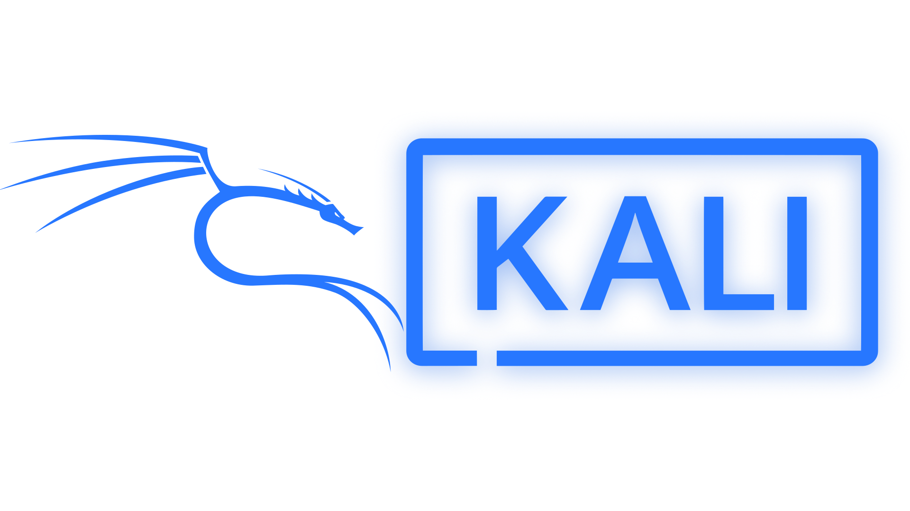

Cursos y tutorias
kali linux
Kali Linux es una distribución de código abierto de Linux, diseñada para la seguridad informática. Se enfoca en herramientas para pruebas de penetración, análisis forense, investigación de seguridad y otras tareas relacionadas. According to Hostinger, Kali Linux es una potente distribución para pruebas de penetración avanzadas y auditorías de seguridad.
 Python avanzado
Python avanzado